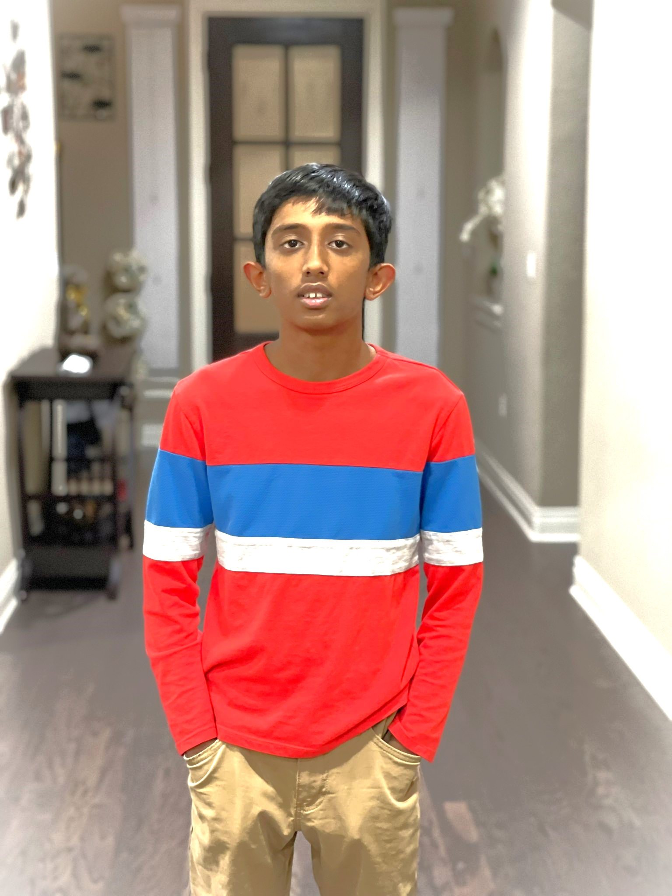

My name is Shahithyan I am 11 years old and I was born on December,1,2010.
I am in 5th grade and my favorite subject is history. The school I go to Challenger School which is fun.I like the band BTS and this is a link
to listen to their music. My favorite songs in BTS is Permission to Dance,Dynamite,Butter,Fire,and DNA.
My favorite sport is soccer.
I play soccer,but I don't watch it. In soccer, my favorite team is PSG(The full form of PSG is Paris-Saint-Germain). The reason why I like this team is Messi is playing in the team.
Messi is considered as one of the world's best soccer player. Some fun facts about Messi are: His full name is Luis Lionel Andres Messi,He was born on June 24, 1987 in Rosario, Argentina,
Messi’s father, Jorge, was a steelworker and coach of the local youth football team, On January 11, 2016, Messi won the FIFA Ballon d’Or for a record fifth time!
When I grow up, I want to become a successful computer programmer or a scientist
that studies genes. My favorite restraunt is The Cheesecake Factory and my favorite food there is
Shrimp Scampi and the Celabration Cheesecake. Well, thats all about me.